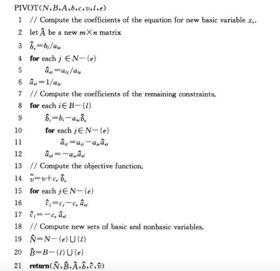

举例：政治家问题
假设你是一个政治家，试图赢得一场选举。选取包括三种不同类型的区域——市区、郊区、乡村。这些区域分别有10万、20万和50万个登记选民。为了有效控制选举局面，你希望在这三个选区中的每一个选区都赢得大多数的选票。你认识到，在某些区域，某些政策更能为你赢得选票。你的主要政策是修筑更多的道路、枪械管制、农业补贴以及增加公共运输的汽油税。根据你的竞选班子的研究，你可以估计通过在每项政策上花费1000美元做广告，在每个居民区可以赢取或输掉多少选票。
下图表格中，没想描述通过话费1000美元广告费支持某个特定政策，在市区、郊区或乡村可以赢得选民的千人数。负数项表示丢失的选民数。
你的任务是计算你需要花费最少的钱，去赢得5万张市区选票、10万张郊区选票和25万张乡村选票。
接下来，使用数学的语言来描述上述问题。首先引入4个变量，
- 是支出在修筑道路广告上的千美元数
- 是支出在枪械管制广告上的千美元数
- 是支出在农业补贴广告上的千美元数
- 是支出在汽油税广告上的千美元数
将所有选区赢得大多数选票的条件，表示成：
变量满足不等式(1-1)~(1-3)的任何一组值都是赢得足够数量的每种票数的一个策略。为了使花费尽量地小，即最小化广告费用。也就是说，最小化表达式:
同时，4个变量都必须大或等于0。那么政治家问题的最终数学模型如下所示：
s.t.
这个问题是一个线性规划问题。接下来详细介绍线性规划。
一般线性规划
在一般线性规划的问题中，我们希望最优化一个满足一组线性不等式约束的线性函数。已知一组实数和一组变量，在这些变量上的一个线性函数f定义为：
如果b是一个实数，而f是一个线性函数，则等式：
是一个线性等式，而不等式
或者
都是线性不等式。我们使用线性约束来表示线性等式或线性不等式。
线性规划概述
为了描述线性规划的性质和算法，使用规范的形式来表示它们是很方便的。本章使用两种形式：标准型和松弛型。
非正式的，在标准型中的线性规划是约束为线性不等式的线性函数的最大化，而松弛型的线性规划是约束为线性等式的线性函数的最大化。
通常使用标准型来表示线性规划，但当描述单纯形算法的细节时，使用松弛形式比较方便。
首先，考虑下面包含两个变量的线性规划：
s.t.
则称满足所有约束式(3-2)~(3-5)的变量的任何设定为线性规划的一个可行解。
在——笛卡尔坐标系统中画出这些约束的图形，如左下图a所示，可以看到可行解的集合(图形中阴影部分)在二维空间构成一个凸形区域。称这个凸形区域为可行区域。
那么求解以上线性规划问题，在概念上，就是遍历可行区域中每一个点，求 的值，最后使得最大的那个点即为所求的点。但是，可行区域包含无限个数的点，所以以上的求解方法并不可取，我们希望找到更加有效可行的求解方法找到使得目标函数取最大值的点。
在二维中，对于任意的z，的点的集合是斜率为-1的一条直线，令z=0，则可画出一条经过原点(0,0)的斜率为-1的直线，如上图b所示。可以看到，直线与可行区域的交集点为(0,0)。
更一般的，对任意的z，直线与可行区域的交集是目标值为z的可行解的集合。上图b显示了直线。
因为可行区域是有界的，所以必定存在某个最大值z使得直线 和可行区域的交集非空，而这个交集或是一个顶点，或是一条线段。如果交集是一个顶点，那么只有一个最优解，而且它是一个顶点。如果交集是一条线段，那么线段上的每一点都有相同的目标值；特别地，线段的两个端点都是最优解。因为线段的每个端点都是一个顶点，所以在这个情况下最优解也在一个顶点上。
更一般地，如果有n个变量，每个约束定义了n维空间中的一个半空间。这些半空间的交集形成的可行区域称作单纯形(simplex)。目标函数则称为一个超平面，而因为可行区域的凸性，如仍然有一个最优解在单纯形的一个顶点上取得。
标准型和松弛型
标准型
在标准型中，已知n个实数；m个实数；以及mn个实数，其中i=1,2,…,m，而j=1,2,…,n。
s.t.
如果构造一个mxn矩阵，一个m维向量，一个n维向量以及一个n维向量，那么上面的标准型可写成：
s.t.
定义：
可行解：满足所有约束的解
不可行解：不满足至少一个约束的解
可行解对应的目标值为，在所有可行解中，目标值最大的一个可行解 为最优解，其目标值称为最优目标值
如果一个线性规划没有可行解，则称此线性规划不可行，否则可行。
将线性规划转换为标准型
一个线性规划可能由于如下4个原因之一而不是标准型：
目标函数可能是一个最小化，而不是最大化
解决方案：简单的对目标函数中的系数取负即可。
可能有的变量不具有非负性约束
假设某个变量不具有非负性约束，则把的每次出现都以来替代，并增加非负性约束和。然后把所有都替换为。比如，目标函数有一个项为，则将其替代为。
可能有等式约束
假设线性规划有一个等式约束，因为当且仅当和时x=y，所以可以将这个等式约束用一对不等式约束和来代替。
可能有不等式约束，但不是，而是。
通过将的约束乘以-1来把它们转换成的约束
举例：如果有线性规划：
s.t.
应用以上的转换准则，把它转换成标准型(此处的与上式中的不等价，转换过程请参照课本)：
s.t.
将线性规划转换为松弛型
为了利用单纯形算法高效地求解线性规划，将它转换成不等式约束都是非负约束，而剩下的约束都是等式约束的形式。令
是一个不等式约束。引入一个新的变量s，并重写不等式(4-7)为两个约束：
称是一个松弛变量(slack variable)，因为它度量了式4-7左边和右边之间的松弛或差别。
在松弛型中，除了非负约束外，所有约束都是等式约束，而且每个变量都具有非负约束。把每个等式约束写成其中一个变量在等式左边，而其余变量在等式右边的形式。同时，等式右边都有相同的变量集合，这些变量也是出现在目标函数中的仅有的变量。
等式左边的变量称为基本变量，等式右边的变量称为非基本变量。
把标准型式(4-7)~(4-10)写成松弛型：
s.t.
使用变量z来表示目标函数的值，使用如下的形式来表示式(4-14)~(4-18)松弛型：
松弛型
用N来表示非基本变量的下标的集合，用B来表示基本变量下标的集合。总有，以及。等式左边的变量被B的元素索引，等式右边的变量被N的元素索引。和标准型一样，用和来表示常项和系数。使用v来表示目标函数的自由常数项。因此松弛型的元组表示形式为(N,B,A,b,c,v)：
其中，所有的变量x受非负约束。
单纯形算法
举例
s.t.
将上式转换成松弛型：
把等式右边的非基本变量设为0，计算等式左边基本变量的值，得到基本解为；其目标值为z=0。
考虑增加的值，当增加时， 的值随之减小。因为对每个变量有一个非负的约束，所以不能允许它们之中的任何一个变成负值。
如果增加到30以上， 变成负数，分别增加到12和9以上， 也成了负数；由此可见式(5-9)是最紧的约束，的增加幅度最先收到它的限制，因此我们互换和的角色：
那么重写线性规划为如下形式：
这种操作称为主元(Pivot)。如上所示，一个主元操作选取一个非基本变量(称为换入变量)和一个基本变量(称为换出变量)，然后交换二者的角色。
执行步骤1，计算重写的线性规划的可行解：(9,0,0,21,6,0)，目标值为27。
不断地选取目标函数中系数为整数的非基本变量作为换入变量，重复迭代步骤1和步骤2，直到所有非基本变量在目标函数中的系数均为负数。
此时，得到的线性规划为:
这时，执行步骤1，计算得到的目标值即为最优值。
主元(pivot)
现在我们来制定主元的过程。过程PIVOT以一个松弛型为输入，给定元组(N,B,A,b,c,v)，换出变量的下标l，以及换入变量的下标e。它返回描述新松弛型的元组：

1 | import numpy as np |
标准单纯形算法
对于使用单纯形算法求解线性规划问题，还需要解决以下几个问题：
- 如何确定一个线性规划是不是可行的？
- 如果线性规划是可行的，但初始基本解是不可行的，该怎么做？
- 应如何确定一个线性规划是无界的？
- 应如何选择换入变量和换出变量？
问题1、2将在《初始基本可行解》章节来讨论；下面先来讨论问题3、4。
求解一个线性规划问题，首先需要判断该问题是否是可行的，如果可行，如何找出一个初始基本解可行的松弛型。因此，假设有一个程序INITIALIZE_SIMPLEX(A,b,c)，输入为一个标准型的线性规划，即一个mxn矩阵，一个m维的向量，一个n维的向量。如果问题不可行，则返回一个消息说明线性规划不可行，然后终止。
以下算法以一个标准型的线性规划作为输入。返回一个n维向量。伪代码如下所示：
以上伪代码的解释如下：
- 在第1行，调用INITIALIZE-SIMPLEX(A,b,c)，要么确定这个线性规划是不可行的，要么返回一个初始基本解可行的松弛型。
- while循环的终止条件为：目标函数中所有的系数都是负值
- 第3行，选择一个在目标函数中系数为正值的变量作为换入变量。（当有多个系数为正值的变量时，如何进行选择的策略，后续再介绍）
- 第4～8行，检查每个约束，然后挑选出最严格限制能增加的数量而又不违反任何的非负约束的那个约束。从而与这个约束相关联的基本变量。
- 第9～11行，如果没有一个约束限制换入变量能够增加的量，则在第10行返回“无界”。否则，在第11行通过调用PIVOT(N,B,A,b,c,v,l,e)子过程来互换换入变量和换出变量的角色。
- 第12～15行，通过把所有的非基本变量设为0以及把每个基本变量设为，来计算初始线性规划变量的一个解。
- 第16行，返回初始线性规划变量的计算值。
1 | #2~11行的实现 |
1 | def SIMPLEX(A,b,c): |
无界
举例说明：
对于以下的线性规划：
s.t.
画出区域为:
通过上图可以看出约束条件给出的可行区域是无限的，同时目标函数在该可行域上可以无限增大。
上述线性规划的松弛型为：
选择为换入变量，为换出变量，有：
接着，为换入变量，使得目标值变小，但是发现对于没有任何的约束，也就是说，可以无限大，所以这是没有边界的情况。
退化
在旋转的过程中，如果在相邻的两次迭代中，松弛型相同，则表示单纯形算法发生了循环，它会使得单纯形算法不终止，陷入死循环中。
我们可以采用多种策略来避免退化，其中最常用的策略为Bland规则：通过总是选择具有最小下标的变量来打破这种相等的局面 。
对偶性
对偶性是个非常重要的性质。在一个最优化问题中，一个对偶问题的识别几乎总是伴随着一个多项式时间算法的发现。对偶性也可以用来证明某个解是最优解。
已知一个目标是最大化的线性规划问题，如何制定一个最小化的对偶线性规划问题，且最优值与原始线性规划的相同。在表示对偶线性规划时，称原始线性规划为primal。
给定一个标准型的primal线性规划，如式(4-4)~(4-6)所示，定义其对偶线性规划为:
s.t.
为了构造对偶问题，
- 将最大化改成最小化
- 将约束右边的与目标函数的系数的角色互换，即与对换
- 将号改成号
在primal问题的m个约束中，每一个在对偶问题中都有一个对应的变量 ；在对偶问题的n个约束中，每一个在primal问题中都有一个对应的变量。
举例
式(5-1)~(5-5)给出的primal线性规划的对偶问题为：
s.t.
从弱对偶性开始，它表示primal线性规划问题的任意可行解的数值不大于对偶问题的任意可行解的值。
引理6-1(线性规划弱对偶性) 令表示式(4-4)~(4-6)中的primal线性规划的任意一个可行解，令表示式(6-1)~(6-3)中的对偶问题的任意一个可行解。则
证明:
推论6-2:令表示primal线性规划(A,b,c)的一个可行解，且令表示相应的对偶问题的一个可行解。如果：
则和分别是primal线性规划和对偶线性规划的最优解。
证明：根据引理6-1，愿问题的可行解的目标值不会超过对偶问题的可行解的目标值。primal线性规划问题是一个最大化问题，而对偶线性规划是一个最小化问题。因此，如果可行解和有相同的目标值，那么没有一个可以被改进。
primal目标函数的系数的负值是对偶变量的值。更准确的说，假设primal问题的最偶一个松弛型为：
则一个最优对偶解为：
所以，式(6-4)~(6-8)定义的对偶线性规划的一个最优解是，，以及。求对偶目标函数的值式(6-4)，得到目标值为(30*0+24*(1/6)+36*(2/3) = 28)。
通过以上的实际例子以及引理6-1,证实了primal问题的目标值缺失等于对偶问题的目标值。
定理6-3(线性规划对偶性) 假设SIMPLEX在原线性规划(A,b,c)上返回。令N和B表示最终松弛型的非基本变量和基本变量的集合，令表示最终松弛型中的系数，令由式(6-9)定义。则是primal线性规划的一个最优解，是对偶线性规划的一个最优解，而且：
证明：见（算法导论）
定理6-4(线性规划对偶性)假设SIMPLEX在primal线性规划(A,b,c)上返回值。令N和B表示最终松弛型的非基本变量和基本变量的集合，令表示最终松弛型中的系数，令为对偶线性规划的解。则是primal线性规划的一个最优解，是对偶线性规划的一个最优解，而且：
初始基本可行解
如何测试一个线性规划是否是可行的，如果是，如何产生一个基本解可行的松弛型。
找出一个初始解
一个线性规划可能是可行的，但是初始基本解可能不是可行的。例如，考虑下列的线性规划：
s.t.
如果将这个线性规划转换成松弛型，基本解将设，这个解不能使得约束条件成立，因此它不是一个可行解。
INITIALIZE-SIMPLEX的伪代码如下所示：
以上伪代码的解释如下：
第1～3行，隐含地测试L的初始松弛型的基本解，而它由:N={1,2,…,n}；B={n+1,n+2,…,n+m}；对于所有,；以及对于所有。如果这个解是可行的，则返回这个松弛型
第4行，构造辅助线性规划
第6行，l设置为转换成松弛型后最小的的下标。因为L的初始基本解是不可行的，所以的松弛型的初始基本解也不是可行的。
第8行，执行PIVOT调用，以 为换入变量，为换出变量
第9行，PIVOT调用产生的基本解是可行的，现在有一个基本解可行的松弛型，返回给SIMPLEX
第10行，重复调用SIMPLEX2~11 行，来求解辅助线性规划
第11～13行，根据第10行返回的辅助线性规划的解：
如果找到了一个目标值为0的 的最优解，那么在12行中为L构造一个基本解可行的松弛型：即从约束中删除所有的项，并且恢复L的初始目标函数。初始目标函数可能同时包含基本变量和非基本变量，因此，在这个目标函数中，将每个基本变量用其关联的约束的右边来替换。
如果初始线性规划L是不可行的，那么在13行中返回这一信息。
1 | def INITIALIZE_SIMPLEX(A,b,c): |
单纯形算法代码实现
1 | import numpy as np |
从几何角度看单纯形算法
后续再加。可参考《参考资料-2》
参考资料
算法导论-线性规划
pivot在很多地方也翻译成旋转